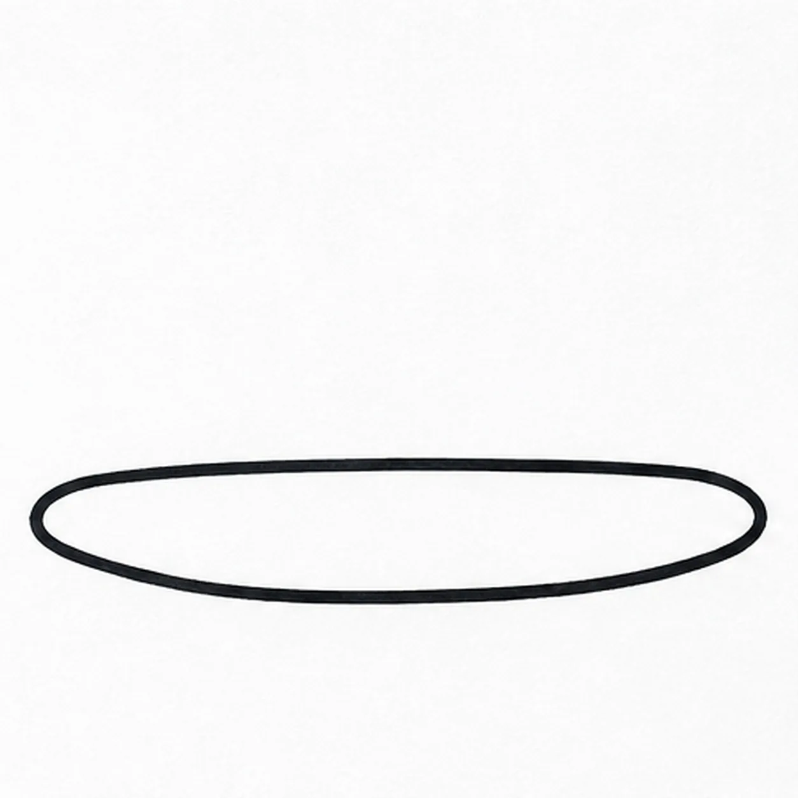
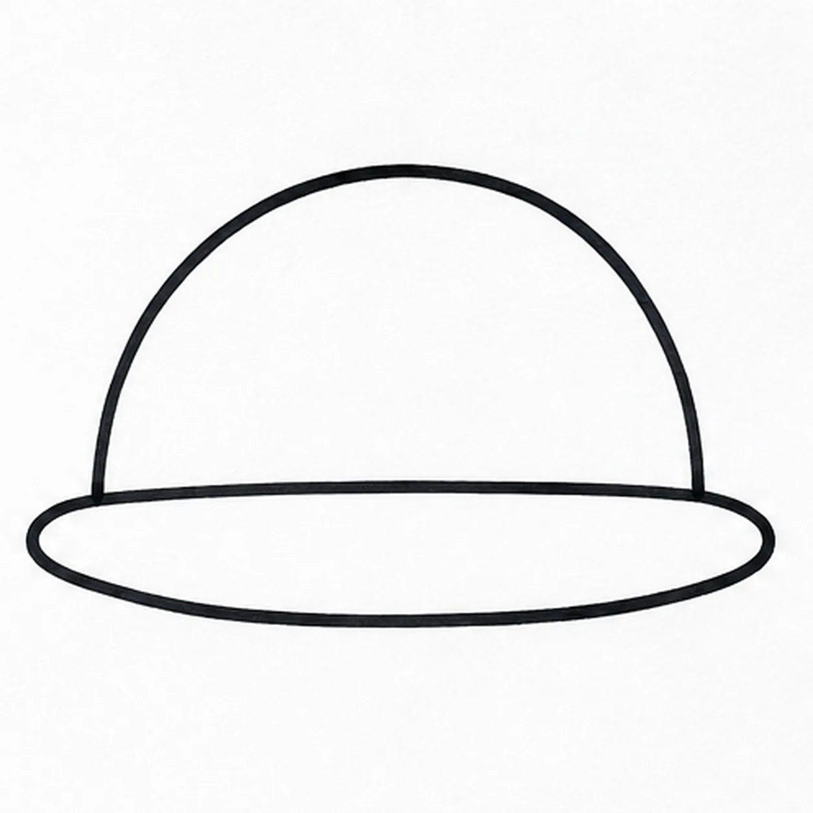
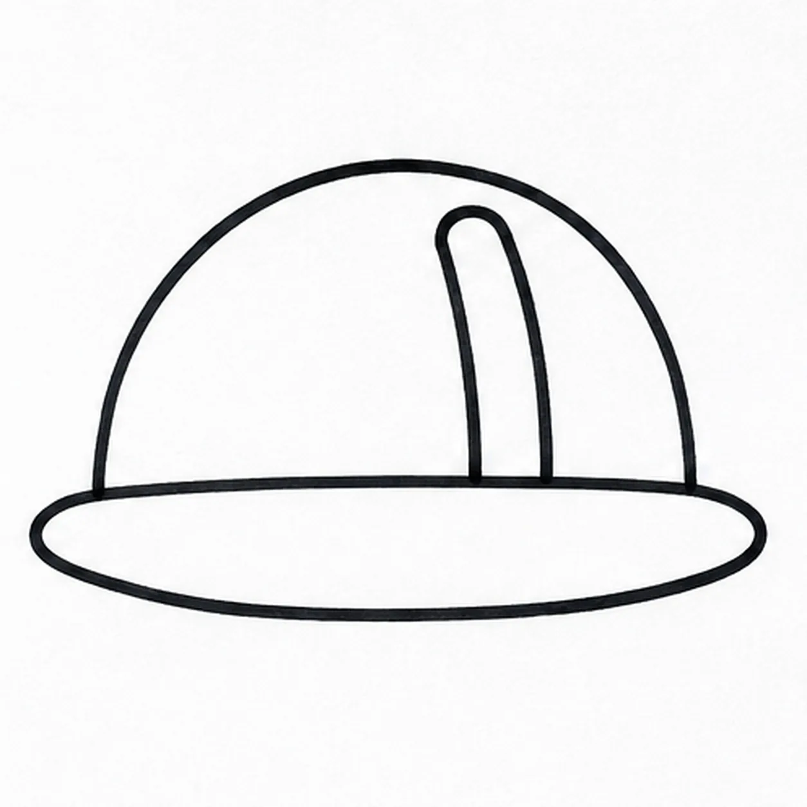
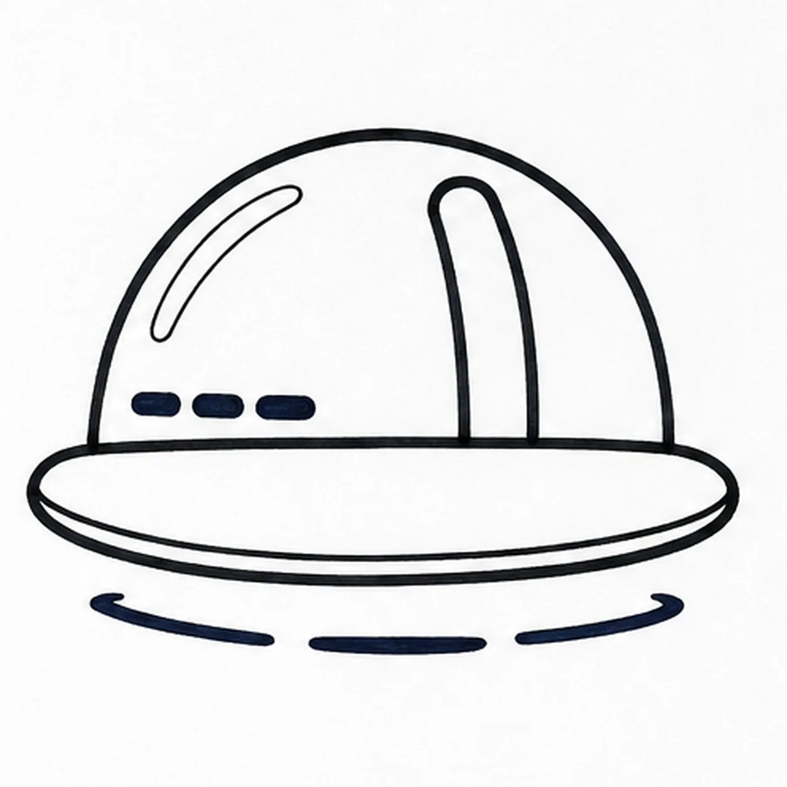

Felt-tip marker mode
Let's draw a hard hat
Treat this as one playful practice round: sketch the idea loosely, simplify the shapes, then commit with confident marker outlines and bright fills.
-
01

Draw the broad brim
Below the middle of the page, draw a wide flattened oval with a slightly straighter back edge and a gently bowed front edge. This closed brim is wider than the dome you will add next.
Marker tip: Rotate the paper as you pull the long front curve. Leave enough space above the brim for a dome about twice as tall as the brim.
-
02

Raise the helmet dome
Starting a little inside the left end of the brim, draw one tall rounded arch up and over to a point a little inside the right end. Both ends meet the back edge of the brim. Keep the brim line visible as the join beneath the dome.
Marker tip: Ghost the arch before touching down. The dome is narrower than the brim, so a short brim end remains visible on each side.
-
03

Add the raised center rib
Inside the dome, draw two narrow curves from near the crown down to the brim, slightly right of center. Join their upper ends with one short curve below the dome outline. Both lower ends touch the brim to make one raised reinforcing rib.
Marker tip: The rib is an attached shape inside the dome. Keep a slim white gap between its rounded top and the outside helmet edge.
-
04

Draw vents shine and the lower rim
On the left half of the dome, draw and darken exactly three short rounded horizontal vent slots in a row near the brim. Add one long curved highlight shape above them. Draw a second bowed line inside the front brim to show its thickness, then add a broken oval shadow in three dark strokes beneath the hat.
Marker tip: Count three vents before filling them. Space them evenly, then leave the long highlight shape empty.
-
05

Color the bright hard hat
Fill the dome golden yellow, the center rib orange, and the brim a deeper orange. Keep the three vents and ground shadow dark navy, and leave the long highlight white. Pull the marker strokes around the dome curve and let a little paper texture show through.
Marker tip: Follow the dome with curved strokes and the brim with sideways strokes. Stop before repeated passes flatten the marker texture.


![Handmade felt-tip marker drawing of one face-free upright cartoon hourglass with exactly two rounded teal caps, exactly two attached coral side pillars, one pale-aqua pinched glass vessel, one curved upper golden-yellow sand bed, one centered falling sand stream, one rounded lower sand pile, exactly two open-paper glass highlights, exactly three yellow four-point sparkles, exactly four deep-navy cap notches, thick imperfect black outlines, visible directional marker texture, and one broken deep-navy ground shadow](../assets/cartoon-hourglass-with-flowing-sand-finished-v1.webp)